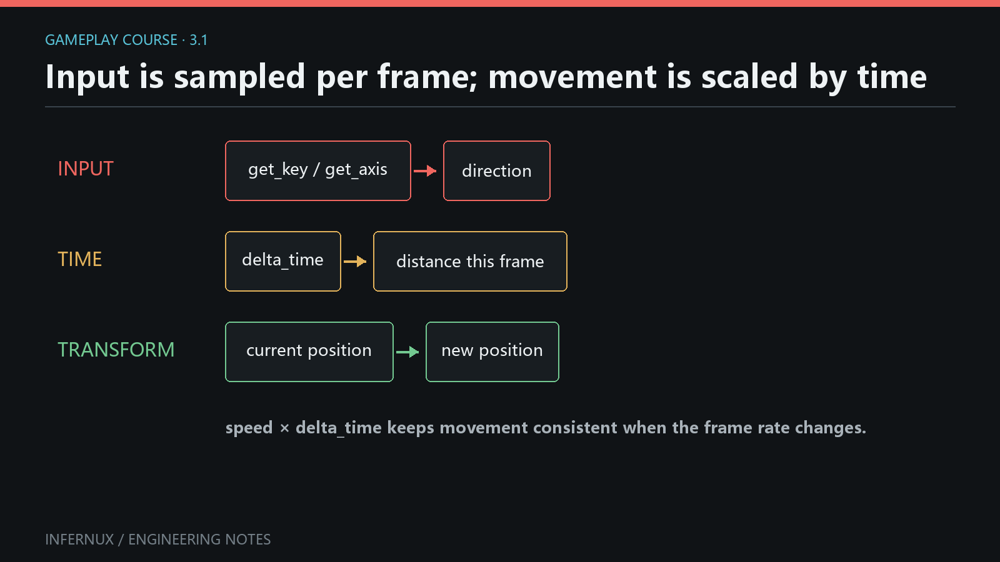

Gameplay · Chapter 3
Input, time, and movement
Movement begins with three small contracts: Input reports state for the current frame, update(delta_time) supplies the frame duration in seconds, and Transform stores where the GameObject is. This chapter combines them into a keyboard-controlled object whose speed stays stable when the frame rate changes.

Build a keyboard mover
Prerequisites. Continue from Chapter 2 with an open project, a saved scene, and the Hierarchy, Project, Inspector, Game, and Console panels visible. The scene needs an enabled Camera that can see the origin.
- In Hierarchy, right-click empty space and choose Create 3D Object > Cube. Rename it
Playerand set its Transform position to(0, 0, 0). - In Project, open an
Assetsfolder, right-click empty space, and choose Create > Script (.py). Name the scriptKeyboardMover. - Open
KeyboardMover.pyand replace its contents with the code below. - Return to the editor and wait for script import to finish. Select
Player, click Add Component in the Inspector, and addKeyboardMover. - Leave Speed at
4, save the scene, and keep the Game panel visible.
from math import sqrt
from Infernux import InxComponent, Vector3, serialized_field
from Infernux.input import Input, KeyCode
class KeyboardMover(InxComponent):
speed: float = serialized_field(default=4.0, range=(0.0, 20.0))
def update(self, delta_time: float):
x = 0.0
z = 0.0
if Input.get_key(KeyCode.A) or Input.get_key(KeyCode.LEFT_ARROW):
x -= 1.0
if Input.get_key(KeyCode.D) or Input.get_key(KeyCode.RIGHT_ARROW):
x += 1.0
if Input.get_key(KeyCode.S) or Input.get_key(KeyCode.DOWN_ARROW):
z -= 1.0
if Input.get_key(KeyCode.W) or Input.get_key(KeyCode.UP_ARROW):
z += 1.0
length_squared = x * x + z * z
if length_squared > 1.0:
inverse_length = 1.0 / sqrt(length_squared)
x *= inverse_length
z *= inverse_length
frame_distance = self.speed * delta_time
position = self.transform.position
self.transform.position = Vector3(
position.x + x * frame_distance,
position.y,
position.z + z * frame_distance,
)
Enter Play mode, click inside the Game panel to give it game-input focus, then hold WASD or the arrow keys. The normalization block keeps diagonal movement at the same maximum speed as movement along one axis.
Read held, pressed, and released state
Input is a static API. Call its methods on the class; do not create an Input() instance. A key can be a KeyCode integer constant or a string name such as "space".
| Query | Result during a press | Typical use |
|---|---|---|
Input.get_key(KeyCode.W) |
True on every frame while held |
Continuous movement |
Input.get_key_down(KeyCode.SPACE) |
True on the transition frame |
Jump, fire, open |
Input.get_key_up(KeyCode.SPACE) |
True on the release frame |
Charge release, stop drag |
The built-in virtual axes are also current public API. Input.get_axis("Horizontal") reads A/D and Left/Right; Input.get_axis("Vertical") reads S/W and Down/Up. Values are -1.0, 0.0, or 1.0, and get_axis_raw() is currently an alias with the same unsmoothed behavior.
Mouse state follows the same frame model. This component logs the Game-viewport position on the first frame of each left click:
from Infernux import Debug, InxComponent
from Infernux.input import Input
class ClickProbe(InxComponent):
def update(self, delta_time: float):
if Input.get_mouse_button_down(0):
x, y = Input.game_mouse_position
Debug.log(f"Game click: ({x:.0f}, {y:.0f})")
Button indices are 0 for left, 1 for right, and 2 for middle. Input.mouse_position uses window pixels; Input.game_mouse_position is relative to the top-left of the rendered Game image. Both are class properties, so they have no parentheses.
In the editor, gameplay queries return idle values when the Game view does not accept game input. Click the Game panel after entering Play mode before diagnosing a keyboard or mouse script.
Turn speed into frame distance
speed is measured in world units per second. Multiplying it by the current frame duration produces the distance for one update:
frame distance = units per second × seconds this frame
At 4 units per second, a 0.025 second frame moves 0.1 units. Four such frames still cover 0.4 units. Faster frames produce smaller individual steps and more of them, so distance over the same elapsed time stays consistent.
The current lifecycle contract distinguishes two time values:
- The
delta_timeargument passed toupdate()andlate_update()is the raw, unscaled frame delta from the engine. Time.delta_timeis the clamped, scaled delta and followsTime.time_scale.
The mover above uses the callback argument, so it continues to use unscaled frame time. For movement that should pause when Time.time_scale becomes 0, import Time from Infernux and use Time.delta_time for frame_distance:
from Infernux import Time
frame_distance = self.speed * Time.delta_time
Use one time source for one calculation. Multiplying by both values applies frame duration twice.
Choose world or local Transform space
Every InxComponent exposes self.transform, a shortcut to self.game_object.transform.
transform.positionis world-space position.transform.local_positionis position relative to the parent.transform.forward,right, andupare read-only world-space direction vectors.transform.local_forward,local_right, andlocal_upare their local-space counterparts.
The tutorial writes a fresh Vector3 back to position, making the complete state change visible in one assignment. If Player is parented below a moving platform, world-space movement still follows the world X/Z axes. Change the read and write to local_position when the parent's coordinate system should define the motion.
Common errors
The object does not move. Enter Play mode, click the Game panel, confirm that KeyboardMover is enabled on Player, and read the Console for import or callback errors.
Movement happens only once per press. Continuous movement needs get_key(). get_key_down() reports one transition frame.
Movement changes with frame rate. Confirm that the displacement is multiplied by exactly one delta-time value. A fixed amount added in every update() is measured in units per frame.
Diagonal movement is too fast. Normalize the two input components when their squared length exceeds 1, as the complete example does.
A child moves along unexpected axes. Decide whether the design needs world position or parent-relative local_position, then use that space consistently for both the read and write.
KeyCode.UpArrow fails. Public constants use uppercase snake case, such as KeyCode.UP_ARROW, KeyCode.LEFT_SHIFT, and KeyCode.SPACE. Import them from Infernux.input.
Verify the result
The chapter passes when all of these checks succeed:
- Holding W, A, S, D, or an arrow key moves
Playercontinuously after the Game view receives focus. - Holding two perpendicular keys produces no visible diagonal speed boost.
- Raising Speed in the Inspector increases distance per second without changing the script.
- The Transform values change during Play mode and return to the authored scene values after leaving Play mode.
- Adding
ClickProbeto any GameObject produces one Console line per left-button press, with coordinates relative to the Game image.
You now have a frame-rate-independent control loop and a clear choice between world and local movement. Chapter 4: Prefabs and runtime object lifetime uses the same one-frame input events to create and remove scene objects during Play mode.